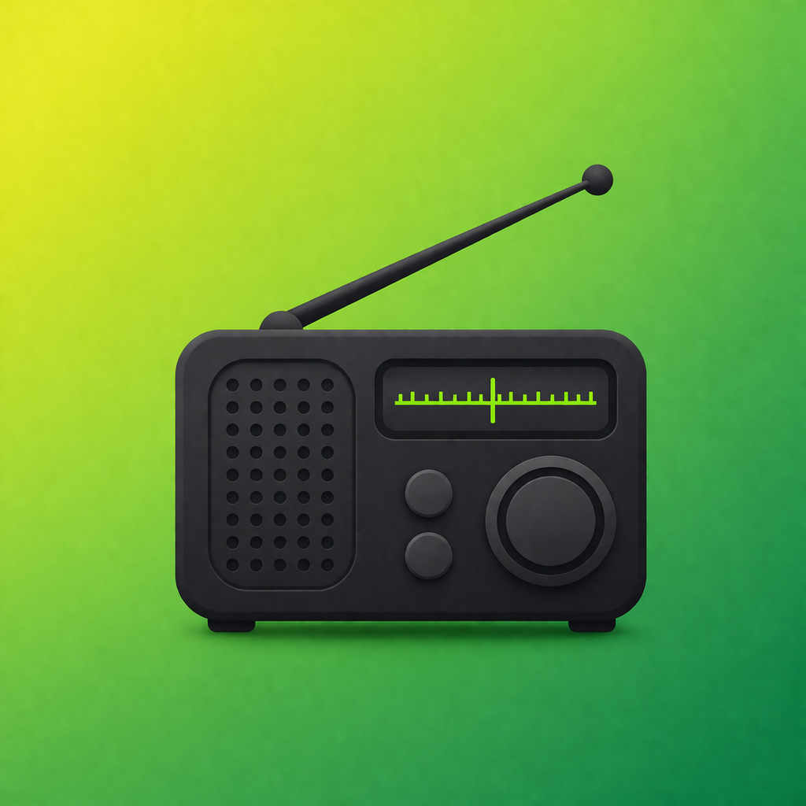

Clean white design with refined green accents.
A polished layout and refined details give SWAtlas a more sophisticated look than typical shortwave frequency apps.
SWAtlas helps you search frequencies, discover stations, check broadcast schedules, and instantly spot what is live right now — all through a polished experience built for radio listeners, DX enthusiasts, and curious explorers.

Designed with a brighter, cleaner visual identity, SWAtlas balances premium presentation with practical radio tools. The result is a product page that feels far more elevated, modern, and memorable.
A polished layout and refined details give SWAtlas a more sophisticated look than typical shortwave frequency apps.
 Focused UX
Focused UX
Clean hierarchy makes scanning stations, frequencies, and schedules feel immediate.
 Modern Presence
Modern Presence
A stronger visual story makes the app feel more premium and more trustworthy at first glance.
Enter a frequency in kHz and instantly review matching entries in a clean, highly readable layout.
Explore stations, language information, and regional broadcast details without clutter.
Visually emphasize currently active entries so you can focus on what is on air right now.
Review time windows and day patterns with a layout designed for fast interpretation.
Keep browsing previously saved schedule data even when you do not have a reliable connection.
Whether you are monitoring, logging, or exploring, SWAtlas stays focused on useful radio data.